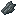
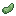

The Zombified Rabbit is an undead hostile mob added by Earthify.
Unlike normal rabbits, Zombified Rabbits attack players and villagers. They spawn in dark areas and are unaffected by breeding mechanics.
Behavior
- Hostile towards players.
- Hostile towards villagers.
- May spawn with a Baby Zombie rider.
- Spawns only in darkness.
- Cannot breed.
Jockey Variant
There is a 10% chance for a naturally spawned Zombified Rabbit to appear with a Baby Zombie rider wielding a Wooden Spear.
Drops
|
 Harder Flesh |
0–1 |
|
 Zombified Rabbit Foot |
Rare |